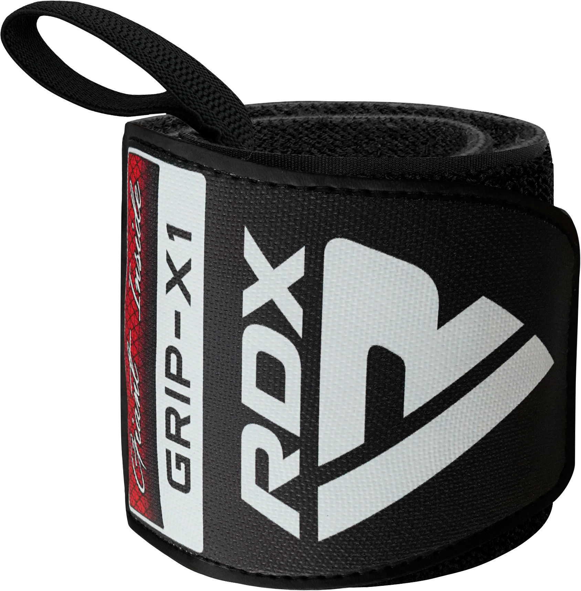
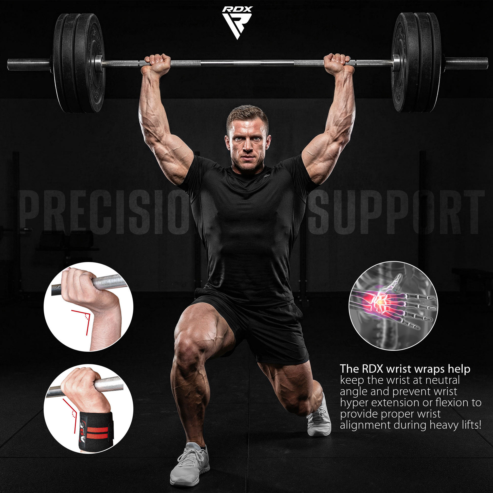
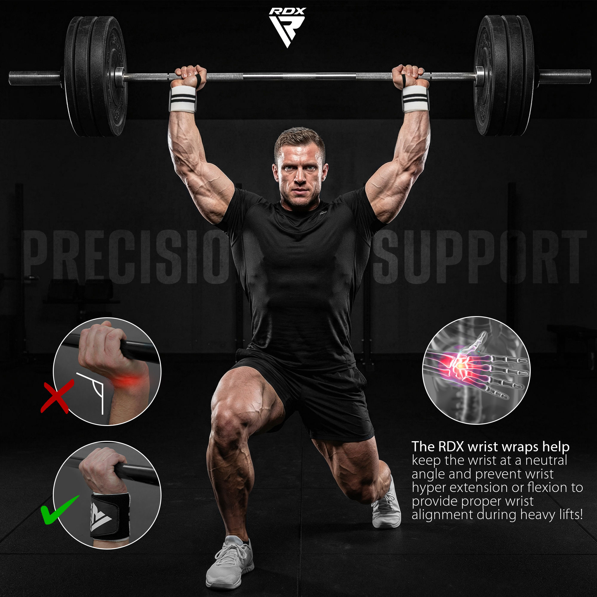
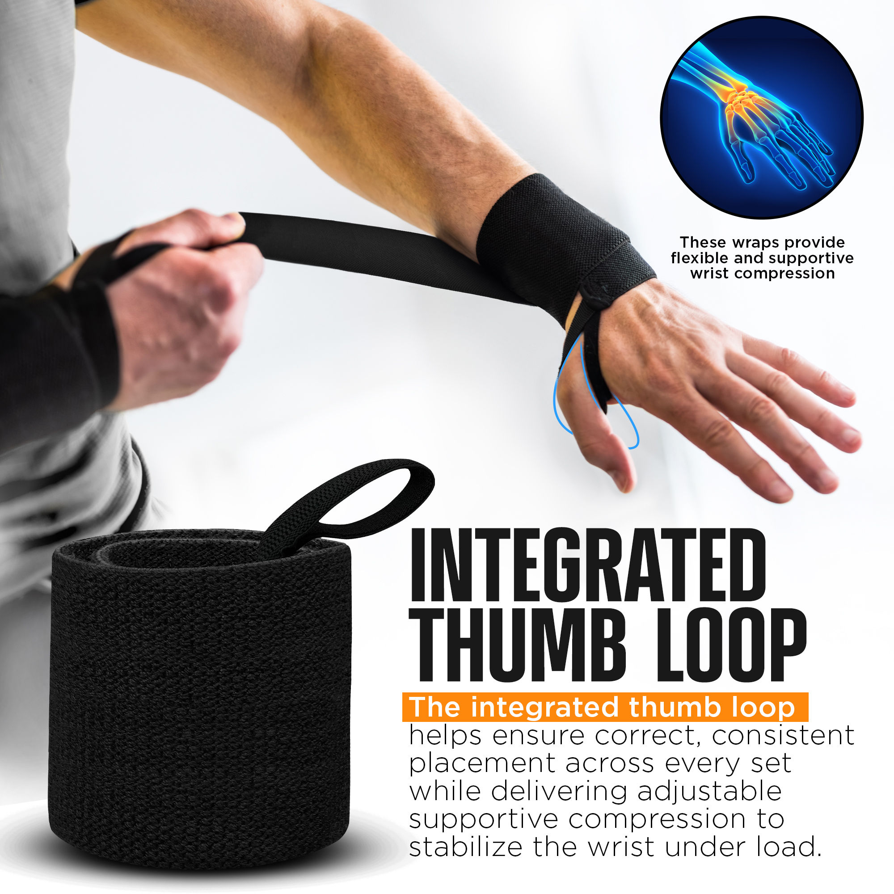
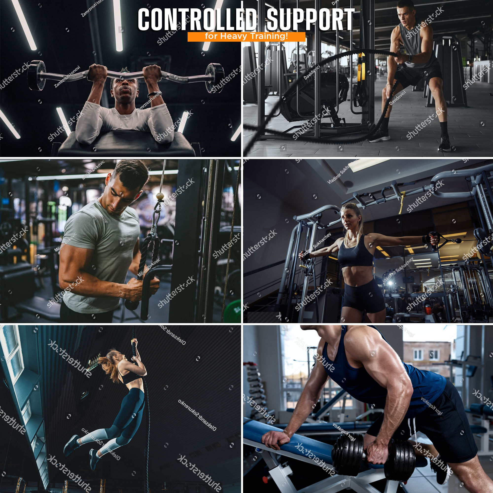
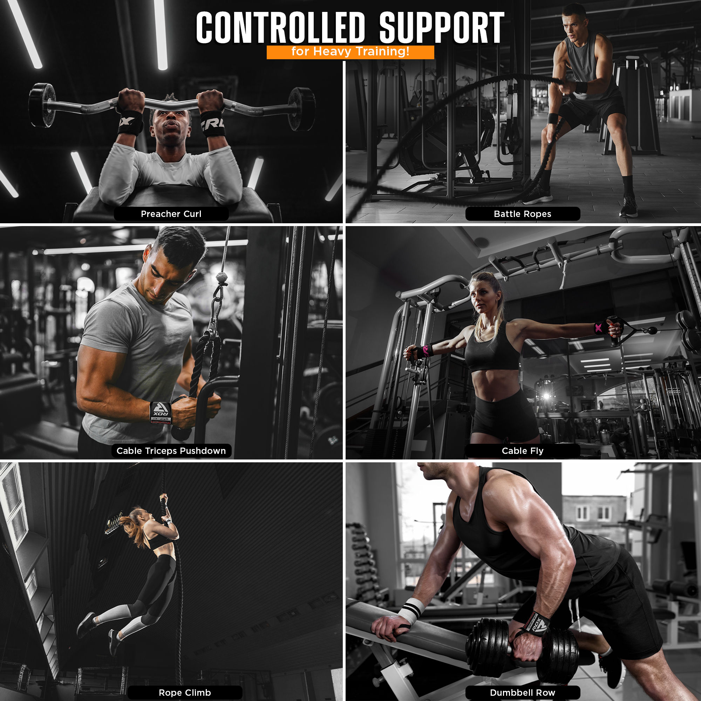
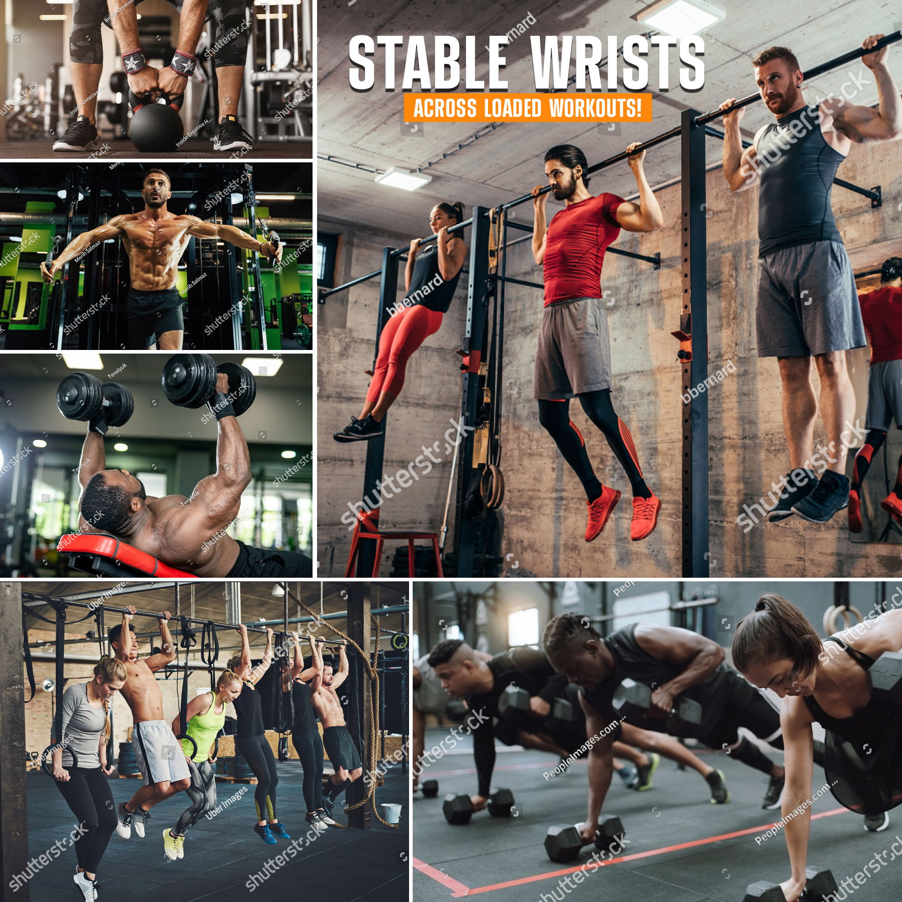
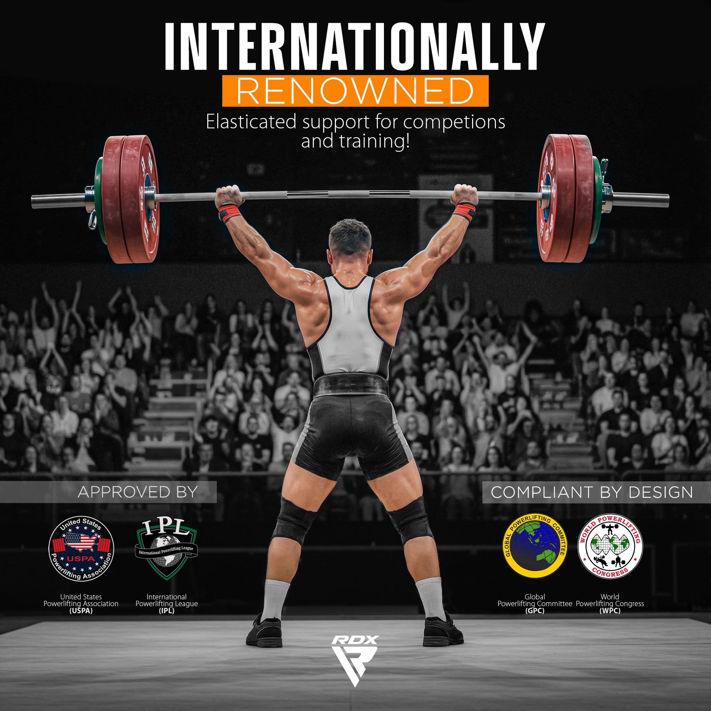

Overview
COSMO-ready
94 / 100
Overall COSMO Readiness
High-confidence, low-misinterpretation image set. Strong “intent nodes” are consistently reinforced:
elasticated wrap , training support , neutral wrist alignment , thumb loop consistency ,
loaded + dynamic workouts .
Recommendation Confidence: Excellent
Images enable fast “what is it + why it matters + when to use it” resolution.
Intent Match Coverage: Broad (without overclaiming)
Heavy training, dynamic movements, and loaded workouts are anchored to wrist stability.
Micro-optimizations remain
Add one explicit “not a rigid medical brace” line or a tightness guide to push toward 97–98.
Image Walkthrough (Carousel)
per image
Use the arrows or the chips to move through each image. Replace the src paths with your exports.
This is CSS-only (no JS).
Image 0 — Hero Product Shot
identity
Product

Drop your image here: set src to your product shot file.
AI reads
Elasticated wrist wrap (hook-and-loop, thumb loop, fabric wrap)
Intent matched
“What is this?” • “Is it a wrap or a brace?”
Graph edges
Product→IsA→Elasticated Wrist Wrap
Why it matters
Reduces misclassification and increases recommendation precision.
IsA: wrist_wrap
feature: thumb_loop
feature: velcro_closure
Image 1 — Designed for Training Support
positioning
Positioning
Drop your image here: training support + features.
AI reads
Firm yet flexible support for training + performance
Intent matched
“Will these help in the gym?”
Graph edges
Product→UsedFor→Training Support
Opportunity
Add one line: “Not a rigid medical brace” (optional).
used_for: training
benefit: support
property: elasticated
Image 2 — Neutral Wrist / Precision Support
mechanics
Mechanics

Drop your image here: before/after wrist angle.
AI reads
Maintains neutral wrist angle under load
Intent matched
“Will this stop my wrist bending on presses?”
Graph edges
Product→Outcome→Neutral Wrist Alignment Under Load
Trust impact
Explainable mechanism → higher expert confidence.
outcome: neutral_wrist
limits: hyperextension
context: heavy_lifts
Image 3 — Integrated Thumb Loop
ease
Feature

Drop your image here: thumb loop placement.
AI reads
Thumb loop ensures consistent placement across sets
Intent matched
“How do I wear these?” • “Will they slip?”
Graph edges
Product→Feature→Thumb Loop
Conversion impact
Reduces beginner friction and returns.
feature: thumb_loop
benefit: consistency
benefit: stability
Image 4 — Elasticated Wrist Wraps (Usage)
usage
Usage

Drop your image here: lifting + steps.
AI reads
Used in strength training and loaded contexts
Intent matched
“What workouts are these for?”
Graph edges
Product→SuitableFor→Heavy Training
Optimization
Keep activities tied to wrist stability .
suitable_for: strength
suitable_for: dynamic
used_during: lifts
Image 5 — Controlled Support (Heavy Training)
context
Context

Drop your image here: heavy training collage.
AI reads
Controlled support for heavy training
Intent matched
“Wrist support for heavy sets”
Graph edges
Product→SuitableFor→Heavy Training
Watch-out
If collage is broad, add an anchor line: “Stable wrists under load.”
context: heavy_training
benefit: stability
used_for: support
Image 6 — Flexible Support (Dynamic Movements)
mobility
Mobility

Drop your image here: dynamic movement collage.
AI reads
Support is flexible (doesn’t lock the joint)
Intent matched
“Support without losing mobility.”
Graph edges
Product→SuitableFor→Dynamic Movements
Micro-upgrade
Optional: “Not for immobilization.”
property: flexible
suitable_for: dynamic
not_a: brace
Image 7 — Stable Wrists (Loaded Workouts)
outcome
Outcome

Drop your image here: loaded workouts collage.
AI reads
Stable wrists across loaded workouts
Intent matched
“Support across multiple exercises”
Graph edges
Product→HelpsWith→Wrist Stability
Next best add
Ideal place for a tightness guide if adding one.
outcome: stability
used_during: workouts
benefit: consistency
Image 8 — Internationally Renowned (Authority)
trust
Authority

Drop your image here: authority/compliance image.
AI reads
Strong credibility signal for performance-oriented buyers
Intent matched
“Is this brand legit?”
Graph edges
Product→Signal→Trust / Authority
Policy resilience
Consider “competition-inspired ” wording if you want lower risk.
signal: trust
signal: authority
audience: advanced
‹
›
‹
›
‹
›
‹
›
‹
›
‹
›
‹
›
‹
›
‹
›
0
1
2
3
4
5
6
7
8
Optional: If you want auto-advance or swipe gestures, we’ll add a tiny JS enhancement. This version stays
strictly HTML + CSS.
Section Breakdown
scores
1) Product Identity 20/20
Clear hero product + naming prevents confusion with straps/gloves/braces.
2) Primary Function 19/20
Training support + neutral wrist alignment is reinforced repeatedly across images.
3) Intent Coverage 18/20
Beginner-to-expert queries mostly resolved; tightness guidance would improve.
4) Feature→Benefit→Outcome 19/20
Thumb loop and neutral-wrist visuals make causal mechanics explicit.
5) Multi-use (No Overreach) 18/20
Dynamic + loaded contexts are anchored to wrist stability, not “for everything.”
6) Trust & Compliance 14/15
Strong authority signals; ensure third-party logo usage is authorized if used.
Strengths (Why the set performs well)
wins
Clear positioning: elastic training support
Reduces confusion vs stiff powerlifting wraps and medical wrist braces.
Mechanics explained (not just slogans)
Neutral wrist visual + hyperextension/flexion language improves expert trust and AI certainty.
Feature-to-benefit clarity
Thumb loop image directly explains “consistent placement across sets” (high-value intent node).
Broad use coverage without “all-purpose” overclaim
Dynamic + loaded workouts are tied back to wrist stability and compression support.
Remaining Gaps (Highest ROI)
next
Add one explicit “Not a medical brace” line
Prevents mis-buys from rehab/immobilization shoppers and improves bot routing.
Add a “How tight to wrap?” micro-guide
Light / Medium / Firm guidance reduces beginner uncertainty and potential misuse.
Copy suggestions (drop-in): Option A Training support wraps — not a rigid medical braceOption B Light: warm-up • Medium: training • Firm: heavy pressesOption C Avoid numbness — don’t over-tighten